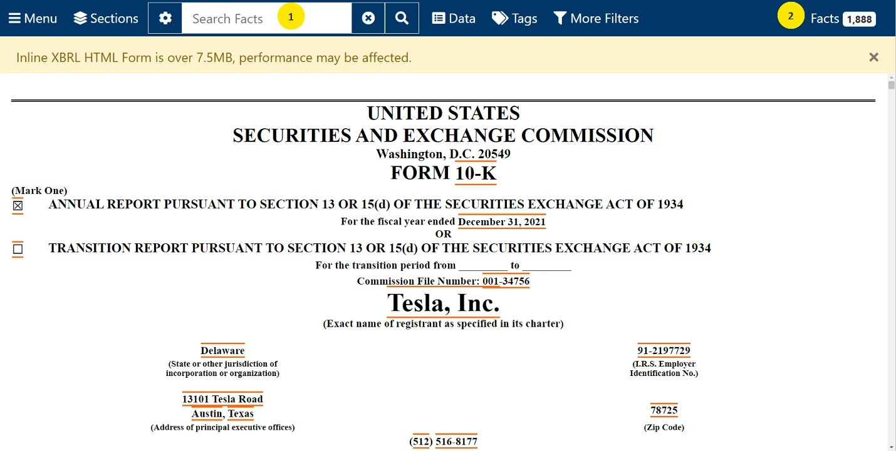

Analytics mindset
EDGAR Explorer
Inline XBRL
Background
Digital reporting of financial and nonfinancial business information continues to evolve and increase in importance. XBRL, eXtensible Business Reporting Language, is an XML standard for tagging business and financial reports using digital dictionaries, or taxonomies. The US GAAP Financial Reporting Taxonomy is a list of computer-readable tags in XBRL that allows companies to label the vast amounts of financial data that is included in typical long-form financial statements and related footnote disclosures. This tagging provides greater uniformity and helps increase the transparency and accessibility of the information. The SEC requires domestic and foreign companies using US GAAP and foreign private issuers using International Financial Reporting Standards (IFRS) to provide their financial statements in the XBRL format as an exhibit to their periodic and current reports and registration statements, as well as to transition reports needed to be filed because of a change in fiscal year.
“In June 2018, the SEC adopted amendments to require the use, on a phased in basis, of Inline XBRL for operating company financial statement information and fund risk/return summary information. Inline XBRL is a structured data language that allows filers to prepare a single document that is both human-readable and machine-readable, so that filers need only prepare one Inline XBRL document rather than generate an HTML document of their financial statement information or risk/return summary information and then tag a copy of the data to create a separate XBRL exhibit. For data users, Inline XBRL provides an easier way to view, access, and explore the contextual information of the underlying data. For example, users can click on individual tagged data points in the filing to find more information about the data, such as citations and hyperlinks to the relevant accounting guidance, narrative definitions for the values, and reporting period information associated with each value.
“Viewing Inline XBRL filings does not require any specialized software, because the Commission has incorporated an Inline XBRL Viewer into the Commission’s Electronic Data Gathering, Analysis, and Retrieval (EDGAR) system. Anyone using a recent standard internet browser can view an Inline XBRL filing on EDGAR. The short video describes some of the features and capabilities of the open source Inline XBRL Viewer.”1
Exploring Tesla’s Inline XBRL filing in EDGAR
Inline XBRL filings are searchable documents that allow easy navigation of a financial statement. In this case, we will use the search features of Inline XBRL to search key facts about Tesla’s revenue in its 2021 Form 10-K (annual) filing. This case will provide insight into both Tesla’s financial statements and its footnotes. You can access the filing here: Inline XBRL Viewer (sec.gov).2
The image below is a screenshot of the Inline XBRL filing for Tesla. To navigate the Inline XBRL filing, you can use the search bar at the top of the filing (see 1 below) and the search results appear in the Facts section (see 2 below). Inline XBRL filings are navigated by clicking on the links that appear in the Facts section. These links take you to the section of the filing that discusses each of the facts.

Required
Explore Tesla’s 2021 Form 10-K Inline XBRL filing in EDGAR and perform the following:
Enter the accounting standard for revenue recognition ASC 606 into the search bar.
Confirm that the number of facts decreases from 1,888 (all the facts in the filing) to 3.
Click the Facts section and confirm that you can find the text blocks relating to Significant Accounting Policies, Revenue and Digital Assets Net.
Click on Revenue and read the section under Automotive Sales Revenue. In the second paragraph, confirm that Tesla records a sales return reserve for estimated variable consideration related to future product returns.
Now you are ready to explore Tesla’s revenue in more depth. Go back to the search bar and type in Revenue and use Inline XBRL to search through the 176 facts about Tesla’s revenue. Answer the following questions. For each question, note how you found this information:
How much revenue did Tesla earn in 2021?
What are the two main sources of revenue for Tesla?
Does Tesla have an account for returns of automobiles?
Explain Tesla’s Automotive Regulatory Credits and why they count as revenue for the company.
Did Tesla accept digital assets (i.e., bitcoin) from customers? Where do they disclose this?
How much bitcoin does Tesla hold?
Did Tesla recognize revenue from the sale of digital assets? If so, how much?
Revisit the revenue recognition discussion about the sales return reserve discussed in the case. In your own words, describe what Tesla is doing to account for the possibility of returns, and then answer the two questions below:
Why is it necessary to have this account as an estimate?
Based on this footnote, do you think that many customers return their cars to Tesla? What wording in the footnote helped you reach your conclusion?
What else can you find about Tesla’s revenue that you did not expect? Make a note of your discoveries to share with the class.
Footnotes
“Inline XBRL,” U.S. Securities and Exchange Commission website, https://www.sec.gov/structureddata/osd-inline-xbrl.html, accessed December 22, 2022.
↩“United States Securities and Exchange Commission Form 10-K, Tesla, Inc.,” U.S. Securities and Exchange Commission website, https://www.sec.gov/ix?doc=/Archives/edgar/data/1318605/000095017022000796/tsla-20211231.htm, accessed December 22, 2022.
↩